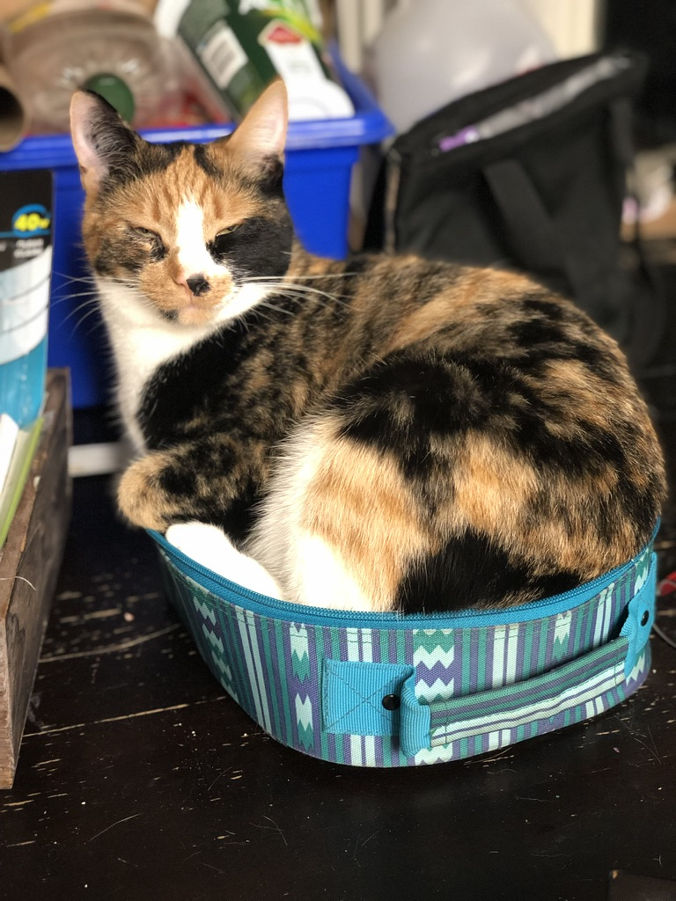
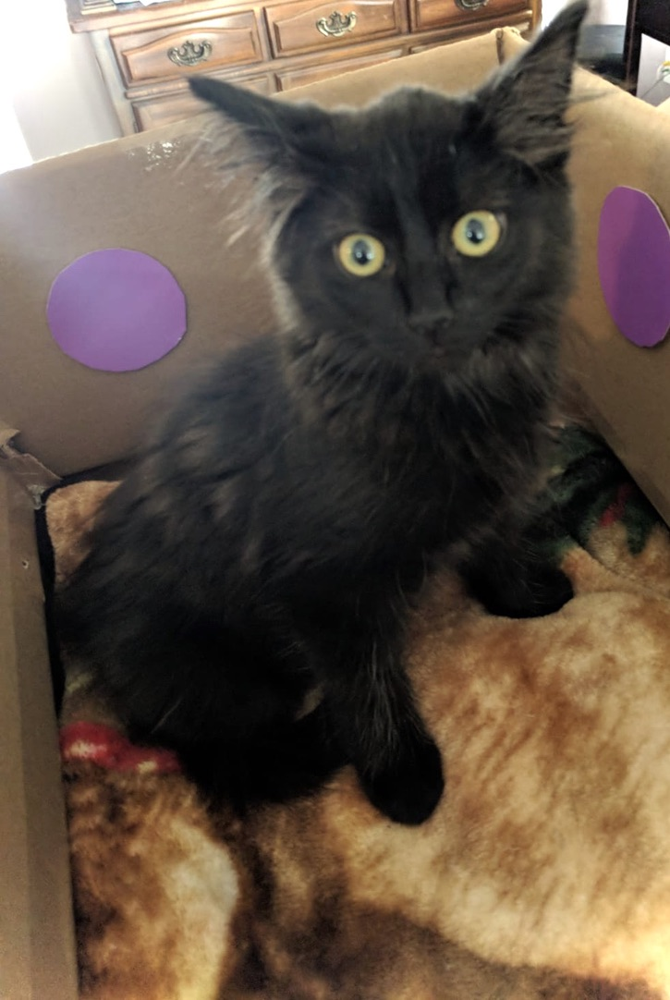
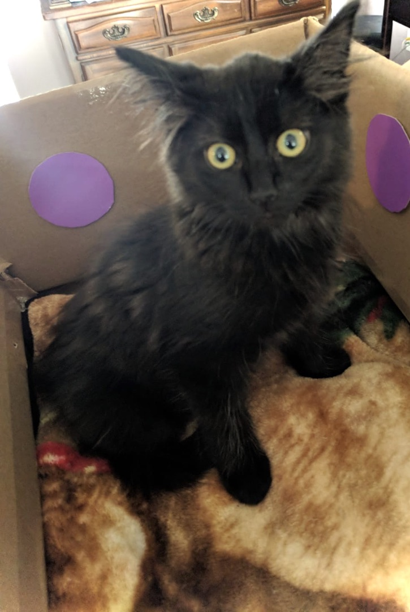

Add Your Adoption Story Here
Browse Adoption Stories

 

I can hardly contain my excitement as I share that I just adopted the most amazing dog from Pawfect paradise! üêæ‚ù§Ô∏è After weeks of searching and countless hours spent browsing profiles, I finally found my perfect match‚Äîmeet Boba, a playful 2-year-old Labrador mix!
Meet Willow! I am so glad we adopted her! My family thought we'd never get another cat, but when we met Willow we instantly loved her. Thank you, Pawfect Paradise!
This choatic pup is named Loki. Pawfect warned me of his mischievous nature, but they assured me how loving he is. They were right! He is my first puppy and he keeps me busy. I appreciate Pawfect Paradise for introducing me to him.
Here's Gracie! This living vacuum cleaner is my best friend. I adopted her a year ago and I don't know what I'd do without her. Thanks, Pawfect Paradise!
This crazy looking cat is named Dexi. She is playful until company comes over. She always runs and hides! It took a whole month for her to warm up to me after adopting her! Well worth it!